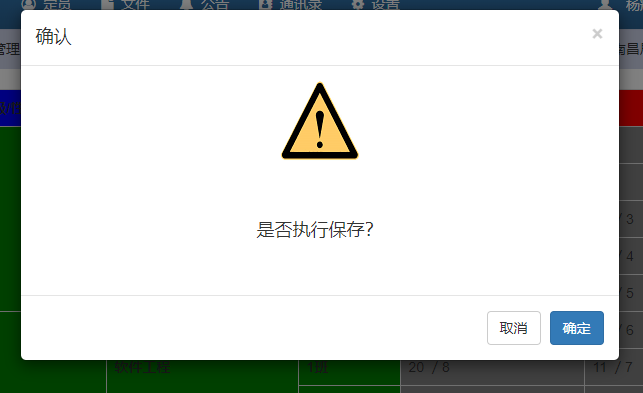
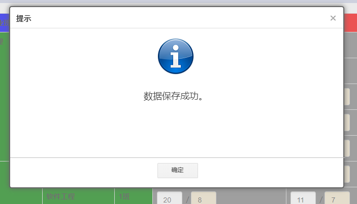

命令按钮（Command Button）：非常重要的、执行命令的界面元素，一般表现为按钮形态，且被解析成 Html 的 a 标签。
<eIvy:COMMANDBUTTON/>
放在页面模板中的命令标签，一定要配置 DynamicDataControlID 属性。除此之外，必需配置的属性包括：CommandName 命令名称、Text 命令按钮文本。
命令按钮的外观属性只有一个：CssClass，即类样式。常用的样式遵循 Bootstrap 的规范，例如：btn btn-default 表示默认按钮样式、btn btn-primary 主按钮样式、btn btn-info 信息按钮样式、btn btn-warning 警告按钮样式等，具体的参考 Bootstrap 的按钮样式。另外，通过这个属性还可以配置出字体图标（有关于字体图标内容请在必应上搜索 FontAwesome），例如：btn btn-primary fa fa-info，可以配置出如下图所示的按钮：
图 1 带有字体图标样式的按钮
其配置代码如下：
<eIvy:COMMANDBUTTON
...
CssClass="btn btn-primary fa fa-info"
Text=" 保存"
...
/>
命令按钮最重要的还是它的行为属性，而其中最重要的就是 CommandName 属性。该属性指示命令按钮执行框架提供的业务逻辑，例如：ListEditSave 列表编辑数据保存、NewNavigate 新增数据页导航、FormSave 表单数据保存等等。如果要查看所有的命令，请浏览 命令参考。
除此之外就是前置数据库脚本、后置数据库脚本有关的配置属性了，关于这个问题请浏览 命令按钮的前置与后置数据库脚本。
命令按钮还有一些行为属性也是非常有用的，例如：Prompt 命令执行询问提示、NavigateUrl 命令导航、SuccessMessage 命令执行成功消息、IgnoreSuccessMessage 是否忽略成功消息、IgnoreRawUrlOnNavigating 是否在导航时忽略原始Url、IndicatorName 指示器名称、FunctionName 功能名称、RaiseDataBindDataControlIds 引发数据绑定的数据控件ID、RaiseDataSaveDataControlIds 引发数据保存的数据控件ID。
如果配置了 Prompt 属性，则在点击按钮的时候，会弹出一个询问窗口，确认是否执行该命令，在该窗口上有一段询问提示文字，就是 Prompt 属性的配置值。效果和代码如下所示：

图 2 配置了 Prompt 属性的命令按钮执行询问提示效果
<eIvy:COMMANDBUTTON
DynamicDataControlID="DDC1"
CommandName="ListEditSave"
Text=" 保存"
CssClass="btn btn-primary fa fa-info"
Prompt="是否执行保存？"
/>
如果配置了 NavigateUrl 属性，则在命令执行之后会按照属性指定的地址进行页面跳转。在配置该属性的时候要注意：一律采用 ~/ 方式的相对页面地址写法；在页面中的命令按钮是无法使用动态数据控件属性表达式、字段引用表达式作为地址栏参数取值的，但可以用命令控件与页面属性表达式作为地址栏参数取值。例如：下面的配置会在导航地址中带上当前页面地址中的 ThemeID 参数进行跳转，那么在跳转之后的 ~/Students/List 页面上会带上 ThemeID 这个参数。有关更多的表达式语法，参见 模板表达式。
<eIvy:COMMANDBUTTON
DynamicDataControlID="DDC1"
CommandName="ListEditSave"
Text=" 保存"
CssClass="btn btn-primary fa fa-info"
Prompt="是否执行保存？"
NavigateUrl="~/Student/List?ThemeID=(@Request[ThemeID])"
/>
如果配置了 IgnoreRawUrlOnNavigating 属性为 True，则在页面跳转的时候不会带上 Source 当前原始地址信息作为参数。命令按钮在进行页面跳转的时候默认会将当前页面的地址作为 Source 参数带到跳转页面，以便于配置了 Return 命令的按钮进行页面返回跳转。但配置了该属性为 True 之后，就不会带上 Source 参数了。
如果配置了 SuccessMessage 属性，会在命令执行成功之后弹出框提示命令成功执行了，其中弹出框中有一段文字，就是该属性的配置值。如果命令本身就有成功提示（如 ListEditSave 命令），那么配置了该属性之后，会取代命令自身的提示信息。效果和代码如下所示：

图 3 配置了 SuccessMessage 属性的执行效果
<eIvy:COMMANDBUTTON
DynamicDataControlID="DDC1"
CommandName="ListEditSave"
Text=" 保存"
CssClass="btn btn-primary fa fa-info"
Prompt="是否执行保存？"
SuccessMessage="数据保存成功。"
/>
如果配置了 IgnoreSuccessMessage 属性为 True，则在命令执行成功后不会弹出消息框。这在命令进行页面跳转的时候，减少了用户操作的步骤，特别是命令本身自带了成功消息，但是又不想显示的情况下是非常有用的。
如果配置了 IndicatorName 属性，则命令按钮会按照指示器的逻辑进行隐藏与显示。有关更多指示器的内容，请参考 命令指示器。
如果配置了 FunctionName 属性，则命令按钮在执行之前会检查功能权限。建议大家配置该属性，以保证系统的安全。有关于更多功能权限的内容，请参考 功能权限。
如果配置了 RaiseDataBindDataControlIds 属性，则命令执行完成后会引发指定的动态数据控件进行数据绑定操作。如果要多个动态数据控件都进行数据绑定，则将控件 ID 用逗号分隔。这一属性在页面有多张表格数据进行操作的时候，需要联动执行数据绑定很有用。有关更多动态数据控件的数据绑定内容，请参考 动态数据控件。
如果配置了 RaiseDataSaveDataControlIds 属性，则命令执行完成后会引发指定的动态数据控件进行数据保存操作。如果要多个动态数据控件都进行数据保存，则将控件 ID 用逗号分隔。这一属性在页面有多张表格数据要进行同时保存的时候非常有用。例如：Address 表记录了某个联系人（Contacts 表）的联系地址，我们把 Contacts 表和 Address 表放在一个页面进行操作，并且为 Contacts 表配置了用于保存数据的命令按钮，当用户点击保存按钮的时候，默认只会保存对 Contacts 表的操作，而 Address 表的数据是不会被保存的。但我们为保存命令按钮配置该属性，并指明 Address 表的动态数据控件 ID，此时保存按钮就同时会保存针对两张表的操作了。这样不至于为两张表分别提供两个保存按钮，对于用户来说，具有了更好的操作体验。
有两个用于导航的属性：NavigateUrlOnError 和 NavigateUrlOnWarning，它们的配置有一定的讲究，默认情况下，只要是命令的执行，或者前置与后置脚本执行的过程中发生了异常，在没有配置这两个属性的情况下，页面是不进行任何跳转的。但是如果配置了 NavigateUrlOnError 则会在显示错误消息之后，按照此属性配置的页面地址进行跳转。但是我们还可以通过在前置与后置数据库脚本中将错误消息按照如下格式进行撰写，则命令按钮将区分 Error (错误)、Warning（警告）两种情况，分别按照 NavigateUrlOnError 和 NavigateUrlOnWarning 配置的页面地址进行跳转。在数据库脚本中的错误消息撰写格式如下：
RAISERROR('{Type:"Error",Message:"TEST",ErrorCode:0}', 16, 1)
如果这个时候配置了 NavigateUrlOnError 属性，则按照该属性的页面地址跳转。
RAISERROR('{Type:"Warning",Message:"TEST",ErrorCode:0}', 16, 1)
如果这个时候配置了 NavigateUrlOnWarning 属性，则按照该属性的页面地址跳转。
我们还可以根据 ErrorCode 的不同来确定不同的跳转地址，例如：
<eIvy:COMMANDBUTTON
...
NavigateUrlOnWarning="[{ErrorCode:0,Url:'~/XXX/XXX'},{ErrorCode:1,Url:'~/YYY/YYY'}]"
/>
RAISERROR('{Type:"Warning",Message:"TEST",ErrorCode:1}', 16, 1)
如果数据库脚本是按照上述代码抛出异常，那么命令按钮会按照 NavigateUrlOnWarning 属性配置中 ErrorCode 为 1 的 Url 地址 ~/YYY/YYY 进行跳转。如果没有找到对应的 ErrorCode 则不进行页面跳转。
除了上述行为属性之外，还有专门为命令进行配置的属性 CommandPropertySetting，该属性以 JSON 格式为命令的属性进行设置，例如：ListEditSave 命令本身具有 SuccessMessage 属性，如果想取消该属性设置，则通过以下代码可以实现：
<eIvy:COMMANDBUTTON
DynamicDataControlID="DDC1"
CommandName="ListEditSave"
Text=" 保存"
CssClass="btn btn-primary fa fa-info"
Prompt="是否执行保存？"
CommandPropertySetting="{SuccessMessage:''}"
/>
上述代码中通过将 SuccessMessage 置为空字符串，可以取消命令默认的该属性值。有关于命令究竟有哪些属性，请参见 命令参考。
© eIvy Framework 2019.